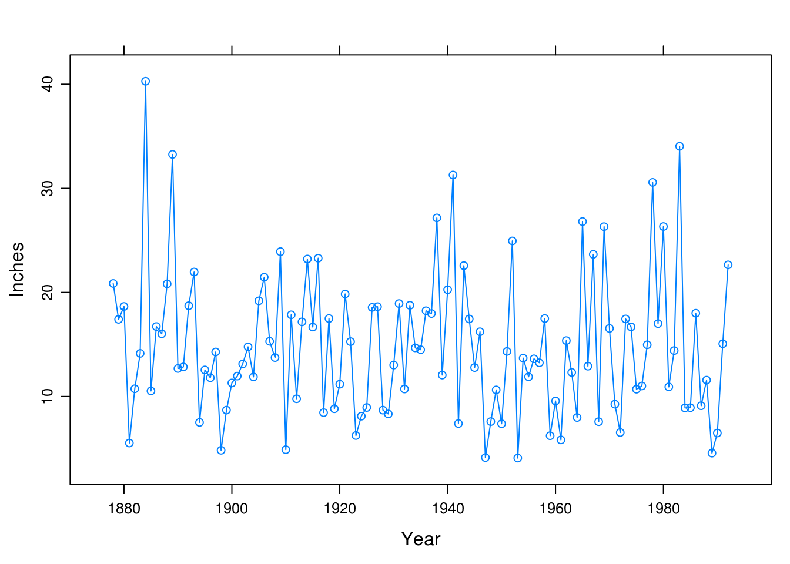
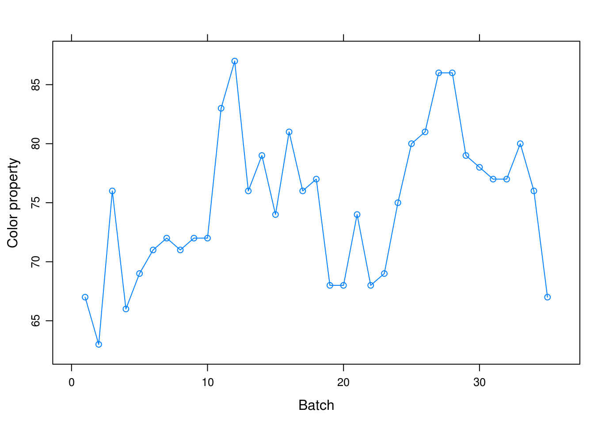
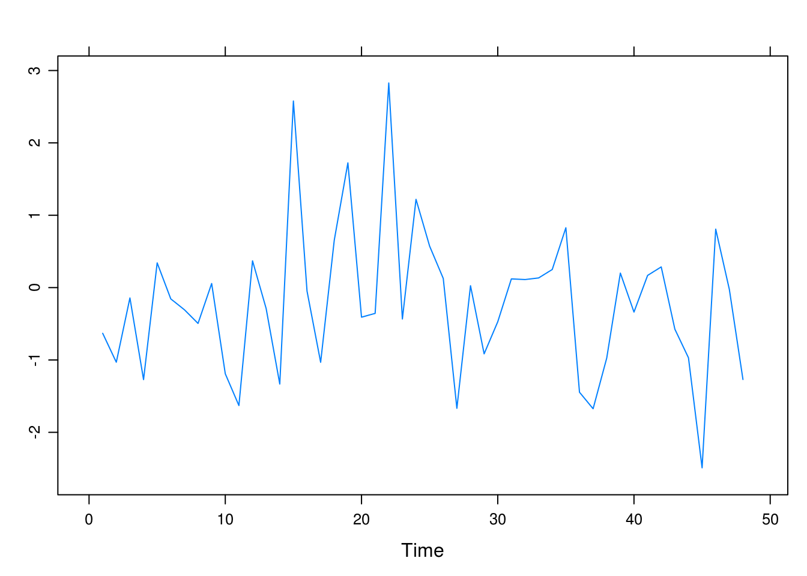
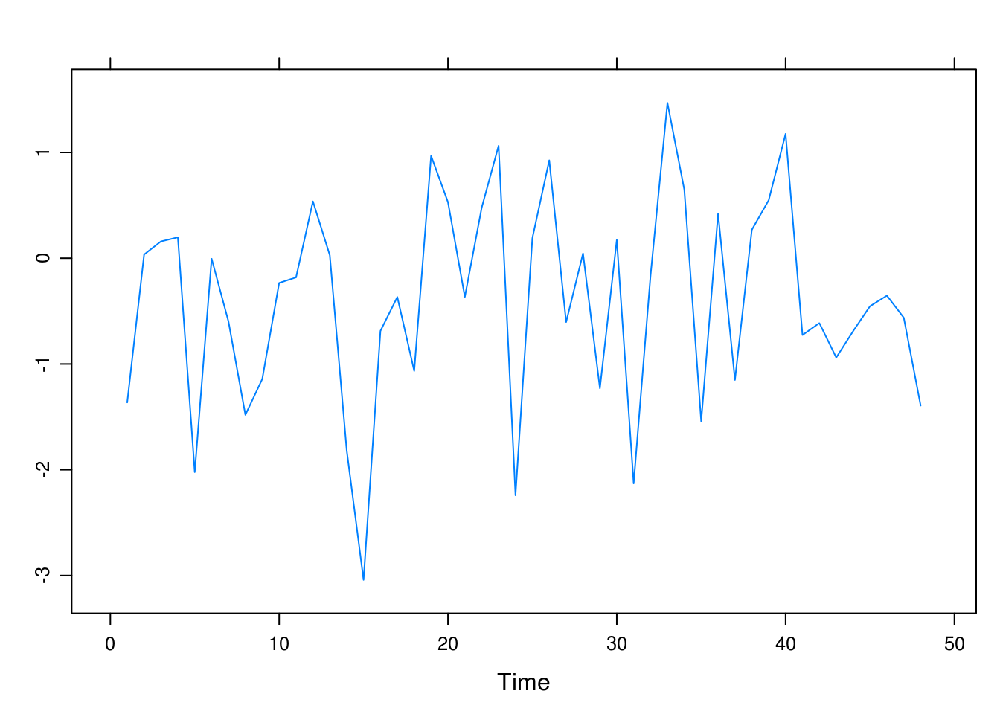
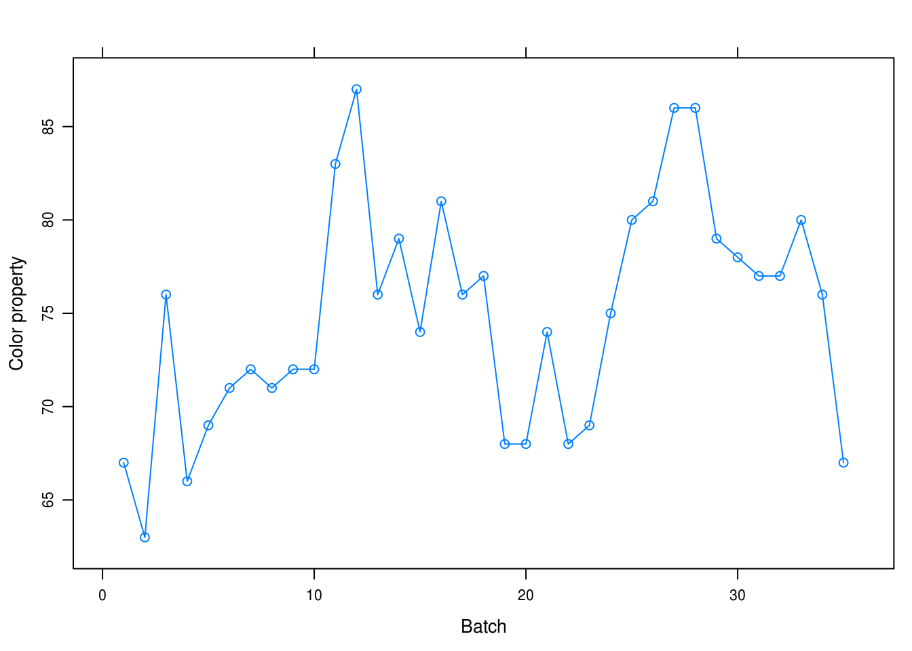
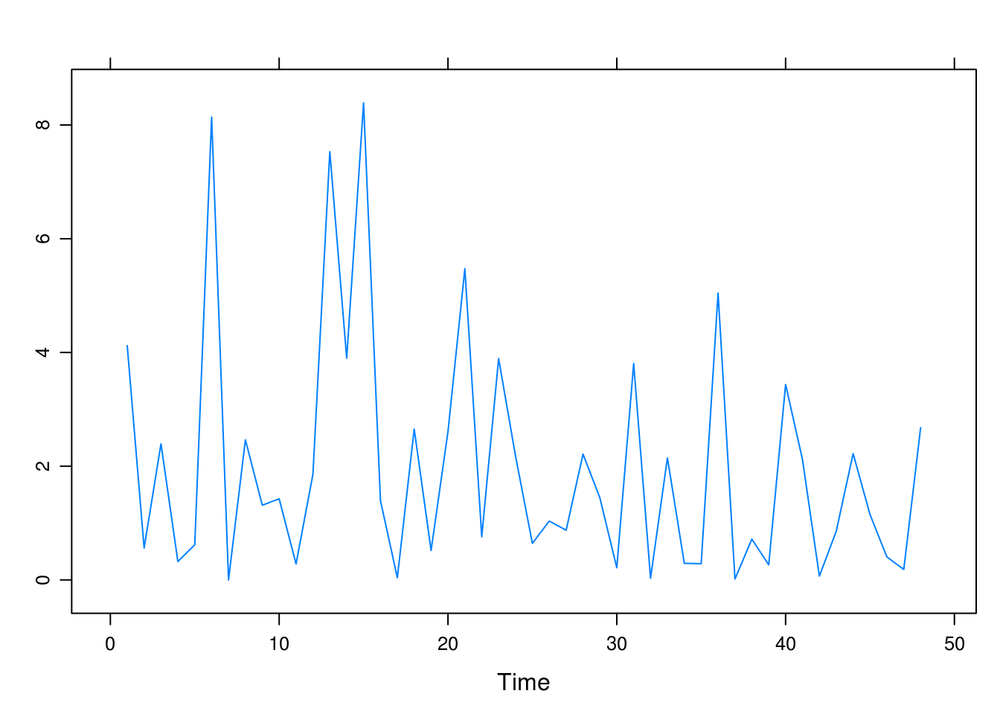
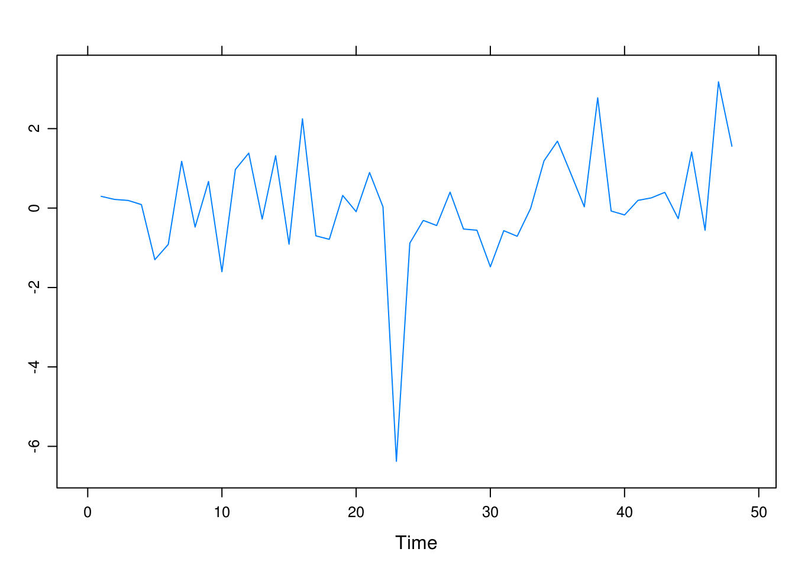
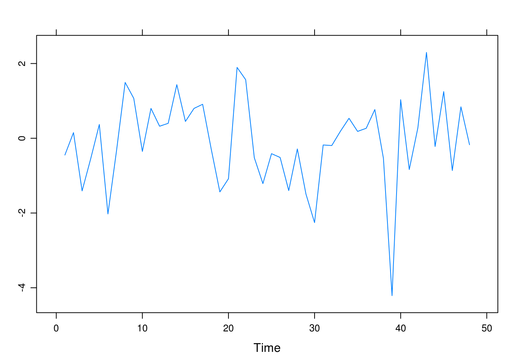
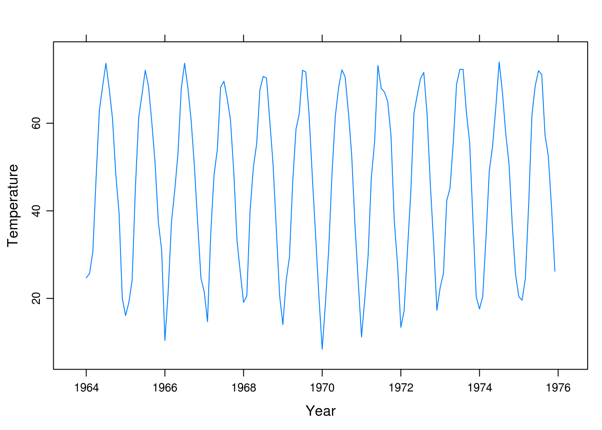

Chapter 1 Introduction
1.1 Larain
Use software to produce the time series plot shown in Exhibit 1.2, on page 2. The data are in the file named larain.
library(TSA)
library(latticeExtra)
data(larain, package = "TSA")xyplot(larain, ylab = "Inches", xlab = "Year", type = "o")
1.2 Colors
Produce the time series plot displayed in Exhibit 1.3, on page 3. The data file is named color.
data(color)
xyplot(color, ylab = "Color property", xlab = "Batch", type = "o")
1.3 Random, normal time series
Simulate a completely random process of length 48 with independent, normal values. Plot the time series plot. Does it look “random”? Repeat this exercise several times with a new simulation each time.
xyplot(as.ts(rnorm(48)))
xyplot(as.ts(rnorm(48)))
As far as we can tell there is no discernable pattern here.
1.4 Random, \(\chi^2\)-distributed time series
Simulate a completely random process of length 48 with independent, chi-square distributed values, each with 2 degrees of freedom. Display the time series plot. Does it look “random” and nonnormal? Repeat this exercise several times with a new simulation each time.
xyplot(as.ts(rchisq(48, 2)))
xyplot(as.ts(rchisq(48, 2)))
The process appears random, though non-normal.
1.5 t(5)-distributed, random values
Simulate a completely random process of length 48 with independent, t-distributed values each with 5 degrees of freedom. Construct the time series plot. Does it look “random” and nonnormal? Repeat this exercise several times with a new simulation each time.
xyplot(as.ts(rt(48, 5)))
xyplot(as.ts(rt(48, 5)))
It looks random but not normal, though it should be approximately so, considering the distribution that we have sampled from.
1.6 Dubuque temperature series
Construct a time series plot with monthly plotting symbols for the Dubuque temperature series as in Exhibit 1.7, on page 6. The data are in the file named tempdub.
data(tempdub)
xyplot(tempdub, ylab = "Temperature", xlab = "Year")